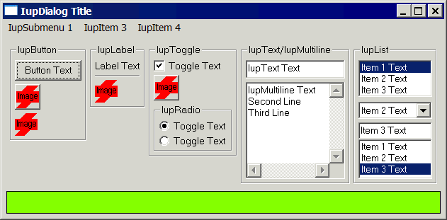
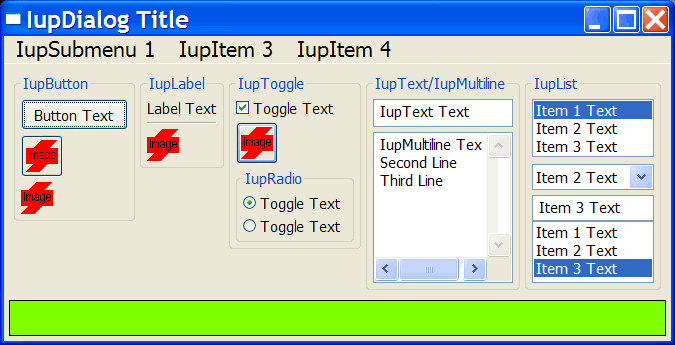
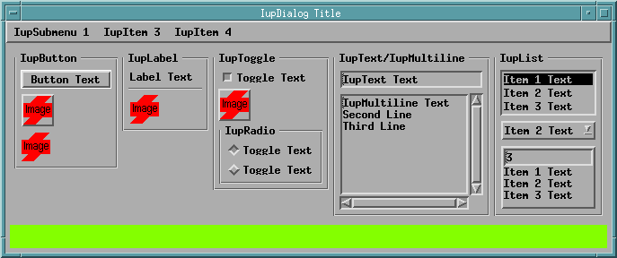
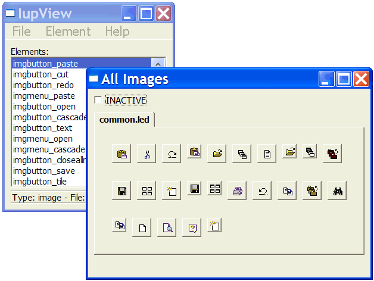
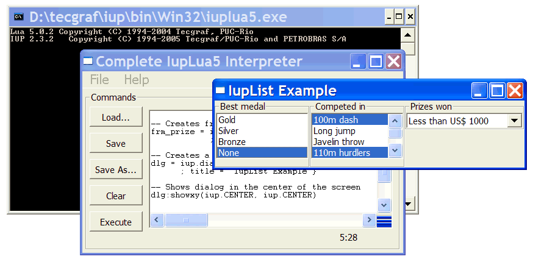

<html>

<head>
<meta http-equiv="Content-Type" content="text/html; charset=iso-8859-1">
<meta name="Generator" content="Microsoft FrontPage 5.0">
<meta name="ProgId" content="FrontPage.Editor.Document">
<title>Guia</title>
<meta http-equiv="Content-Language" content="en-us">
</head>

<body bgcolor="white" lang="EN-US" link="blue" vlink="blue">

<h2 align="center" style="text-align:center"><span style="font-family: Helvetica">Complete Samples</span></h2>
<h3><a name="exemplo">Standard Controls</a></h3>
<blockquote style="margin-top:5.0pt;margin-bottom:5.0pt">
  <p>The following example creates a dialog with virtually all of IUP’s elements as well as some variations of them, 
  with some attributes changed. The same example is implemented in C, LED and Lua. Both screens presented are from the 
  same example, one in Windows 95 and the other in IRIX.<u1:p> The C code is ready to compile. The LED code can be 
  loaded and viewed in the <b>IupView</b> application. The Lua code can be loaded and executed in the <b>IupLua</b> 
  standalone application. </u1:p>
  </p>
  <div align="center">
    <table class="MsoNormalTable" border="0" cellspacing="6" cellpadding="0" style="border-collapse: collapse" bordercolor="#111111">
      <tr>
        <td style="padding:.75pt .75pt .75pt .75pt">
        <p class="MsoNormal" align="center" style="text-align:center"><b>in C</b></td>
        <td style="padding:.75pt .75pt .75pt .75pt" width="20">&nbsp;</td>
        <td style="padding:.75pt .75pt .75pt .75pt">
        <p class="MsoNormal" align="center" style="text-align:center"><b>in LED</b></td>
        <td style="padding:.75pt .75pt .75pt .75pt" width="20">&nbsp;</td>
        <td style="padding:.75pt .75pt .75pt .75pt">
        <p class="MsoNormal" align="center" style="text-align:center"><b>in IupLua</b></td>
      </tr>
      <tr>
        <td style="padding:.75pt .75pt .75pt .75pt">
        <p class="MsoNormal" align="center" style="text-align:center"><a href="sam/sample.c">sample.c</a></td>
        <td style="padding:.75pt .75pt .75pt .75pt" width="20">&nbsp;</td>
        <td style="padding:.75pt .75pt .75pt .75pt">
        <p class="MsoNormal" align="center" style="text-align:center"><a href="sam/sample.led">sample.led</a></td>
        <td style="padding:.75pt .75pt .75pt .75pt" width="20">&nbsp;</td>
        <td style="padding:.75pt .75pt .75pt .75pt">
        <p class="MsoNormal" align="center" style="text-align:center"><a href="sam/sample.lua">sample.lua</a></td>
      </tr>
    </table>
  </div>
  <blockquote>
    <hr>
  </blockquote>
</blockquote>
<div align="center">
  <center>
  <table class="MsoNormalTable" border="0" cellspacing="10" cellpadding="0" style="border-collapse: collapse" bordercolor="#111111">
    <tr>
      <td style="padding:.75pt .75pt .75pt .75pt">
      <p class="MsoNormal" align="center" style="text-align:center"><b>The Result in Windows</b></td>
    </tr>
    <tr>
      <td style="padding:.75pt .75pt .75pt .75pt">
      <p class="MsoNormal" align="center" style="text-align:center"><span style="text-decoration:none">
      </span></td>
    </tr>
    <tr>
      <td style="padding:.75pt .75pt .75pt .75pt">
      <p class="MsoNormal" align="center" style="text-align:center"><b>The Result in Windows XP</b></td>
    </tr>
    <tr>
      <td style="padding:.75pt .75pt .75pt .75pt">
      <p align="center"></td>
    </tr>
    <tr>
      <td style="padding:.75pt .75pt .75pt .75pt">
      <p class="MsoNormal" align="center" style="text-align:center"><b>The Result in Motif</b></td>
    </tr>
    <tr>
      <td style="padding:.75pt .75pt .75pt .75pt">
      <p class="MsoNormal" align="center" style="text-align:center"><span style="text-decoration:none">
      </span></td>
    </tr>
  </table>
  </center>
</div>
<h3>IupView and IupLua Executables</h3>
<blockquote>
  <p>The <b>IupView</b> application can be used to test LED files, load and save images for IupImage or for ICONS, 
  display all images and test them when disabled, display dialogs and popup menus.</p>
  <p align="center"></p>
  <p>The <b>IupLua</b> application can load and execute Lua scripts using the IupLua binding. Lua print calls are output 
  in the console. The executables also include the CDLua and IMLua bindings. </p>
  <p>Since the libraries are statically linked the Lua &quot;require&quot; does not work. To build the IupLua executables with 
  dynamic loading enabled in Windows we use:</p>
  <blockquote>
    <pre>iup/srclua5/tecmake dll &quot;MF=iuplua&quot; &quot;USE_DLL=Yes&quot;
iup/srclua5/tecmake dll &quot;MF=iuplua&quot; &quot;USE_LUA51=Yes&quot; &quot;USE_DLL=Yes&quot;</pre>
  </blockquote>
  <p>These are available in a separate folder together with all the necessary DLLs.</p>
  <p align="center"></p>
  <p>
  <u1:p>For the <b>IupView</b> and <b>IupLua</b> applications see the distribution files, source code and pre-compiled 
  binaries are available at the <a href="download.html">Download</a>.</u1:p></p>
</blockquote>
<h3>All Samples </h3>
<blockquote>
  <p>The IUP samples are spread in the documentation. Each control, dialog, menu has its own set of examples in C, LED 
  and Lua.</p>
  <p>You can browse the examples <a href="examples">here</a>.</p>
</blockquote>
<h3>External Samples</h3>
<blockquote>
  <p>The <a target="_blank" href="http://www.tecgraf.puc-rio.br/cd/">CD</a> and
  <a target="_blank" href="http://www.tecgraf.puc-rio.br/im/">IM</a> libraries have samples that use IUP, check in their 
  documentation.</p>
  <p>Some freely available applications also use IUP:</p>
  <blockquote>
    <p><a target="_blank" href="http://www.tecgraf.puc-rio.br/~scuri/imlab/">IMLAB</a> - Image Processing Laboratory</p>
    <p><a target="_blank" href="http://www.tecgraf.puc-rio.br/edpatt">EdPatt</a> - Pattern Editor</p>
    <p><a target="_blank" href="http://www.tecgraf.puc-rio.br/ftool/">Ftool</a> - Two-dimensional Frame Analysis Tool
    </p>
  </blockquote>
</blockquote>

</body>

</html>
